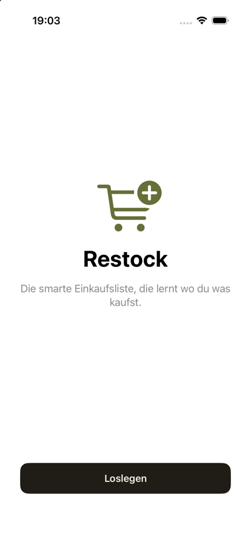
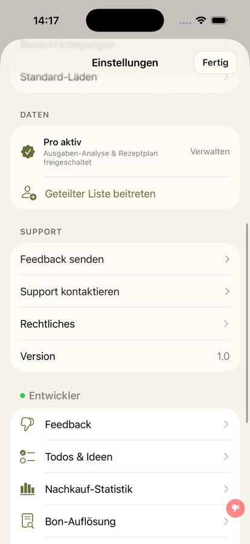

<title>iCloud-Abgleich Entwurf</title>
<style>
/* Layout: je Abschnitt drei iPhone-Karten nebeneinander (Heute / Entwurf / Alternative), auf Handybreite untereinander. Farben = Tokens der App (DesignSystem), Onboarding auf Systemweiß/-schwarz wie heute. */
:root{--bg:#F5F2E9;--surface:#FDFBF4;--ink:#201D16;--sub:#6F6A5B;--line:rgba(32,29,22,.13);--accent:#666F38;--amber:#A97F2E;--red:#B5462F;--ok:#4E7A3A;--frame:#D9D4C4;--sys:#FFFFFF;--btn:#201D16;--btnfg:#FFFFFF;
--font:-apple-system,BlinkMacSystemFont,"SF Pro Text","Helvetica Neue",Arial,sans-serif;--mono:ui-monospace,"SF Mono",Menlo,monospace}
@media (prefers-color-scheme:dark){:root:not([data-theme="light"]){--bg:#141310;--surface:#1D1C16;--ink:#EBE7DA;--sub:#A29B8A;--line:rgba(235,231,218,.13);--accent:#A7AE6B;--amber:#C89A4A;--red:#D9765E;--ok:#8DB872;--frame:#2B2A22;--sys:#000000;--btn:#EBE7DA;--btnfg:#141310;color-scheme:dark}}
:root[data-theme="dark"]{--bg:#141310;--surface:#1D1C16;--ink:#EBE7DA;--sub:#A29B8A;--line:rgba(235,231,218,.13);--accent:#A7AE6B;--amber:#C89A4A;--red:#D9765E;--ok:#8DB872;--frame:#2B2A22;--sys:#000000;--btn:#EBE7DA;--btnfg:#141310;color-scheme:dark}
body{background:var(--bg);color:var(--ink);font-family:var(--font);padding-inline:16px;padding-block:28px;line-height:1.45}
main{max-width:1120px;margin:0 auto;display:flex;flex-direction:column;gap:36px}
h1{font-size:1.55rem;margin:0;text-wrap:balance}
h2{font-size:1.15rem;margin:0 0 4px;text-wrap:balance}
.lead{color:var(--sub);max-width:68ch;margin:6px 0 0}
.bar{display:flex;flex-wrap:wrap;gap:10px;align-items:center;margin-top:14px}
.bar button{font:inherit;font-size:.85rem;padding:6px 14px;border-radius:999px;border:1px solid var(--line);background:var(--surface);color:var(--ink);cursor:pointer}
.bar button[aria-pressed="true"]{background:var(--accent);color:var(--surface);border-color:var(--accent)}
.bar button:focus-visible{outline:2px solid var(--accent);outline-offset:2px}
.row{display:grid;grid-template-columns:repeat(auto-fit,minmax(270px,1fr));gap:24px;align-items:start;margin-top:14px}
.col{min-width:0;display:flex;flex-direction:column;gap:8px}
.tag{font-size:.72rem;letter-spacing:.08em;text-transform:uppercase;color:var(--sub);margin:0}
.tag b{color:var(--accent)}
.shot{border:8px solid var(--frame);border-radius:34px;overflow:hidden;max-width:300px;width:100%;margin:0 auto;display:block;background:var(--sys)}
.phone{background:var(--bg);border:8px solid var(--frame);border-radius:34px;padding:14px 12px 18px;max-width:300px;width:100%;margin:0 auto;min-height:520px;box-sizing:border-box;display:flex;flex-direction:column}
.phone.sys{background:var(--sys)}
.nav{font-weight:600;text-align:center;font-size:.95rem;margin-bottom:10px}
.back{color:var(--accent);font-weight:400;font-size:.85rem;float:left}
.sec{font-size:.68rem;letter-spacing:.06em;text-transform:uppercase;color:var(--sub);margin:12px 6px 6px}
.list{background:var(--surface);border-radius:14px;overflow:hidden}
.li{display:flex;justify-content:space-between;gap:8px;padding:10px 14px;font-size:.84rem;border-top:1px solid var(--line);align-items:center}
.li:first-child{border-top:0}
.li .r{color:var(--sub);font-variant-numeric:tabular-nums;text-align:right}
.li .stack{display:flex;flex-direction:column;min-width:0}
.li small{color:var(--sub);font-size:.72rem}
.ic{width:22px;color:var(--accent);flex:none;text-align:center}
.lead-i{display:flex;gap:10px;align-items:center;min-width:0}
.ok{color:var(--ok)!important}.bad{color:var(--red)!important}.warn{color:var(--amber)!important}
.new{outline:2px dashed var(--accent);outline-offset:-2px}
.code{font-family:var(--mono);font-size:.68rem;color:var(--sub);word-break:break-word}
.foot{font-size:.7rem;color:var(--sub);margin:6px 6px 0}
.welcome{flex:1;display:flex;flex-direction:column;align-items:center;justify-content:center;gap:8px;text-align:center;color:var(--ink)}
.welcome svg{width:64px;height:64px}
.welcome h3{font-size:1.6rem;margin:4px 0 0}
.welcome p{color:var(--sub);font-size:.85rem;margin:0;max-width:24ch}
.cta{background:var(--btn);color:var(--btnfg);border-radius:12px;text-align:center;padding:12px;font-weight:600;font-size:.9rem}
.cta.dim{opacity:.45}
.spin{width:22px;height:22px;border-radius:50%;border:3px solid var(--line);border-top-color:var(--accent);animation:sp 1s linear infinite}
@keyframes sp{to{transform:rotate(360deg)}}
@media (prefers-reduced-motion:reduce){.spin{animation:none}}
.hint{display:flex;gap:8px;align-items:center;justify-content:center;font-size:.78rem;color:var(--sub);margin-bottom:10px}
.hint .spin{width:14px;height:14px;border-width:2px}
.skip{color:var(--accent);font-size:.82rem;text-align:center;margin-top:10px}
.note{font-size:.84rem;color:var(--sub);margin:0}
.legend{border-top:1px solid var(--line);padding-top:16px;max-width:72ch;font-size:.9rem}
.legend ul{margin:6px 0 0;padding-left:18px}.legend li{margin-bottom:6px}
</style>
<main>
<header>
<h1>iCloud-Abgleich: Entwurf zu #156</h1>
<p class="lead">Drei sichtbare Teile. Die Ersteinrichtung wartet bis zu 10 Sekunden auf Läden aus iCloud (sehen alle Nutzer). Dazu kommen zwei Einträge im Entwicklermodus: der Zustand des iCloud-Abgleichs und doppelte Läden. Gelöscht oder zusammengeführt wird nichts. „Heute“ sind echte Screenshots aus dem Simulator, die Entwürfe sind nachgebaut. Alle Zahlen und Fehlertexte sind Beispiele.</p>
<div class="bar" role="group" aria-label="Darstellung">
 <span class="note">Ansicht:</span>
 <button type="button" id="t-sys" aria-pressed="true">wie System</button>
 <button type="button" id="t-light" aria-pressed="false">Hell</button>
 <button type="button" id="t-dark" aria-pressed="false">Dunkel</button>
</div>
</header>

<section>
<h2>1 · Ersteinrichtung nach Neuinstallation</h2>
<p class="lead">Heute startet die Einrichtung sofort. Liegt dein „Einrichtung erledigt“-Vermerk noch nicht auf dem Gerät, legt sie alle 17 Standardläden neu an, und iCloud bringt kurz danach die 17 alten dazu.</p>
<div class="row">
 <div class="col"><p class="tag">Heute</p>
  
 </div>
 <div class="col"><p class="tag"><b>Entwurf A (empfohlen)</b> · Warten vor dem Start</p>
  <div class="phone sys">
   <div class="welcome">
    <svg viewBox="0 0 64 64" fill="none" stroke="var(--accent)" stroke-width="4" stroke-linecap="round" stroke-linejoin="round" aria-hidden="true"><path d="M4 12h8l6 30h30l5-20H16"/><circle cx="24" cy="52" r="3" fill="var(--accent)"/><circle cx="44" cy="52" r="3" fill="var(--accent)"/></svg>
    <h3>Restock</h3>
    <p>Die smarte Einkaufsliste, die lernt wo du was kaufst.</p>
   </div>
   <div class="hint new" style="padding:8px;border-radius:10px"><div class="spin" aria-hidden="true"></div>Deine Läden werden aus iCloud geladen …</div>
   <div class="cta dim">Loslegen</div>
  </div>
  <p class="note">Sobald Läden ankommen, entfällt die Einrichtung und die Startseite erscheint. Ohne Läden in iCloud wird „Loslegen“ nach dem ersten Abgleich aktiv, spätestens nach 10 s. Ohne iCloud-Konto wird nicht gewartet.</p>
 </div>
 <div class="col"><p class="tag">Alternative B · Prüfen bei „Los geht's!“</p>
  <div class="phone sys">
   <div class="nav">Läden wählen</div>
   <div class="list">
    <div class="li"><span>🛒 Lidl</span><span class="r ok">✓</span></div>
    <div class="li"><span>🧴 dm</span><span class="r ok">✓</span></div>
    <div class="li"><span>🥬 Rewe</span><span class="r"></span></div>
    <div class="li"><span>🍞 Edeka</span><span class="r"></span></div>
   </div>
   <div style="flex:1"></div>
   <div class="hint new" style="padding:8px;border-radius:10px"><div class="spin" aria-hidden="true"></div>Läden aus iCloud werden noch geladen …</div>
   <div class="cta dim">Los geht's!</div>
  </div>
  <p class="note">Kein Warten am Anfang. Die Einrichtung läuft wie heute, gewartet wird erst beim letzten Knopf, und nur wenn der Abgleich dann noch läuft. Nachteil: Wer schon Läden in iCloud hat, wählt umsonst aus.</p>
 </div>
</div>
</section>

<section>
<h2>2 · Einstellungen → Entwickler</h2>
<p class="lead">Zwei neue Zeilen, nur im Entwicklermodus. Ein Tipp öffnet jeweils die Detailansicht.</p>
<div class="row">
 <div class="col"><p class="tag">Heute</p>
  
 </div>
 <div class="col"><p class="tag"><b>Entwurf</b> · zwei neue Zeilen</p>
  <div class="phone">
   <div class="nav">Einstellungen</div>
   <div class="sec">● Entwickler</div>
   <div class="list">
    <div class="li"><span class="lead-i"><span class="ic">👎</span>Feedback</span><span class="r">›</span></div>
    <div class="li"><span class="lead-i"><span class="ic">☰</span>Todos &amp; Ideen</span><span class="r">›</span></div>
    <div class="li"><span class="lead-i"><span class="ic">▮</span>Nachkauf-Statistik</span><span class="r">›</span></div>
    <div class="li"><span class="lead-i"><span class="ic">🧾</span>Bon-Auflösung</span><span class="r">›</span></div>
    <div class="li new"><span class="lead-i"><span class="ic">☁︎</span><span class="stack">iCloud-Abgleich<small class="bad">Export fehlgeschlagen · 19:02</small></span></span><span class="r">›</span></div>
    <div class="li new"><span class="lead-i"><span class="ic">⧉</span><span class="stack">Doppelte Läden<small>keine</small></span></span><span class="r">›</span></div>
   </div>
   <div class="foot">Gestrichelt = neu. Die Zeile „iCloud-Abgleich“ zeigt rot, sobald der letzte Export gescheitert ist.</div>
  </div>
 </div>
 <div class="col"><p class="tag">Alternative · eine Zeile, eine Ansicht</p>
  <div class="phone">
   <div class="nav">Einstellungen</div>
   <div class="sec">● Entwickler</div>
   <div class="list">
    <div class="li"><span class="lead-i"><span class="ic">🧾</span>Bon-Auflösung</span><span class="r">›</span></div>
    <div class="li new"><span class="lead-i"><span class="ic">☁︎</span><span class="stack">iCloud-Abgleich<small class="bad">Export fehlgeschlagen · 0 doppelt</small></span></span><span class="r">›</span></div>
   </div>
   <div class="foot">Abgleich und Doppel in einer Ansicht mit zwei Abschnitten. Das ist kürzer, mischt aber zwei Themen: Fehler beim Hochladen und den Zustand der Läden.</div>
  </div>
 </div>
</div>
</section>

<section>
<h2>3 · Die beiden Detailansichten</h2>
<div class="row">
 <div class="col"><p class="tag"><b>iCloud-Abgleich</b> · mit Beispielfehler</p>
  <div class="phone">
   <div class="nav"><span class="back">‹ Zurück</span>iCloud-Abgleich</div>
   <div class="sec">Letzter Export (hochladen)</div>
   <div class="list">
    <div class="li"><span>Zustand</span><span class="r bad">fehlgeschlagen</span></div>
    <div class="li"><span>Zeit</span><span class="r">18.10. 19:02</span></div>
    <div class="li"><span>Fehler</span><span class="r">CKError 2 · Teilfehler</span></div>
   </div>
   <div class="sec">Ursache (1 von 12 Einträgen)</div>
   <div class="list">
    <div class="li"><span class="stack">CD_ShoppingItem<small class="code">Cannot create or modify field 'CD_photoData_ckAsset' in record type 'CD_ShoppingItem' in production schema</small></span></div>
   </div>
   <div class="foot">Die 11 übrigen Einträge scheiterten nur mit, weil CloudKit den ganzen Stapel ablehnt.</div>
   <div class="sec">Letzter Import (herunterladen)</div>
   <div class="list">
    <div class="li"><span>Zustand</span><span class="r ok">erfolgreich</span></div>
    <div class="li"><span>Zeit</span><span class="r">18.10. 19:01</span></div>
   </div>
   <div class="sec">Seit Installation</div>
   <div class="list">
    <div class="li"><span>Exporte ok / fehlgeschlagen</span><span class="r">41 / <span class="bad">3</span></span></div>
   </div>
  </div>
 </div>
 <div class="col"><p class="tag"><b>Doppelte Läden</b> · mit Beispieldoppel</p>
  <div class="phone">
   <div class="nav"><span class="back">‹ Zurück</span>Doppelte Läden</div>
   <div class="list">
    <div class="li"><span>Läden gesamt</span><span class="r">36</span></div>
    <div class="li"><span>davon aktiv</span><span class="r">6</span></div>
    <div class="li"><span>Doppelgruppen</span><span class="r warn">17</span></div>
   </div>
   <div class="sec">Lidl · DE · Standardladen</div>
   <div class="list">
    <div class="li"><span class="stack">Lidl<small>aktiv · 12 Artikel · 1A3F…</small></span><span class="r">bliebe</span></div>
    <div class="li"><span class="stack">Lidl<small>aktiv · 0 Artikel · C7D2…</small></span><span class="r"></span></div>
   </div>
   <div class="sec">Bäckerei · eigener Laden</div>
   <div class="list">
    <div class="li"><span class="stack">Bäckerei<small>aktiv · 3 Artikel · 52B0…</small></span><span class="r"></span></div>
    <div class="li"><span class="stack">Bäckerei<small>inaktiv · 0 Artikel · 9E41…</small></span><span class="r"></span></div>
   </div>
   <div class="foot">Nur Anzeige. „bliebe“ markiert den Laden mit der kleinsten Kennung, der bei einem späteren Zusammenführen bliebe. Gleiche Namen in verschiedenen Ländern zählen nicht als Doppel.</div>
  </div>
 </div>
</div>
</section>

<section class="legend">
<h2>Empfehlung</h2>
<ul>
 <li><b>Ersteinrichtung:</b> Entwurf A. Wer schon Läden in iCloud hat, sieht die Einrichtung dann gar nicht erst.</li>
 <li><b>Entwickler:</b> zwei getrennte Zeilen. Fehler beim Abgleich und doppelte Läden sind verschiedene Fragen.</li>
 <li><b>Welcher bliebe:</b> der Laden mit der kleinsten Kennung, nicht der ältere. Apple empfiehlt diese Regel, weil jedes Gerät damit zum selben Ergebnis kommt (Datum taugt nicht, Server setzt oft gleiche Zeiten).</li>
 <li>Nutzer ohne Entwicklermodus sehen nur den Hinweis beim Start, sonst nichts.</li>
</ul>
</section>
</main>
<script>
(function(){
 var b={sys:document.getElementById('t-sys'),light:document.getElementById('t-light'),dark:document.getElementById('t-dark')};
 function set(m){
  if(m==='sys'){document.documentElement.removeAttribute('data-theme');}else{document.documentElement.setAttribute('data-theme',m);}
  Object.keys(b).forEach(function(k){b[k].setAttribute('aria-pressed',String(k===m));});
 }
 Object.keys(b).forEach(function(k){b[k].addEventListener('click',function(){set(k);});});
})();
</script>
